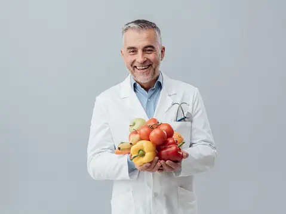

Dieta Diaria
- Desayuno: Avena con frutas y nueces
- Almuerzo: Ensalada de quinoa con verduras y pollo
- Merienda: Yogur griego con miel
- Cena: Salmón al horno con espárragos
Nutricionista

Nombre: Dr. Juan Pérez
Especialidad: Nutrición Clínica
Contacto: juan.perez@nutricion.com
Recomendaciones
- Beber al menos 8 vasos de agua al día.
- Evitar azúcares refinados y comida chatarra.
- Realizar actividad física moderada al menos 30 minutos al día.